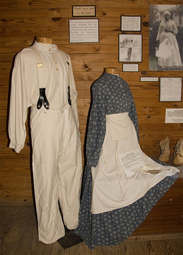

|
Although the planter's family enjoyed a finer and more extensive wardrobe,
special clothing was unnecessary to set apart slave from master because of
obvious racial distinctions. From the master's perspective, slave clothing was
functional. Slaves exercised little control over the cuts and fabrics of their
apparel, but clothes helped distinguish them by sex, age, and status. Women
dressed differently than men, children more simply than adults, and house slaves
more elaborately than field-workers. In both North and South America most owners
recognized the significance of clothing to both the health and morale of their
slaves and hoped that personal pride would carry over into other areas including
work.
Indications are that the sparsity of slave clothing often cited in colonial
times had been alleviated by the eve of the Civil War. The primary cause was the
mushrooming cotton acreage which resulted in locally manufactured inexpensive
cloth. Slave narratives concur that clothing received less criticism as the
nineteenth century unfolded.
By the third decade of the 1800s, slaves generally were receiving clothing
allotments every spring and fall. On plantations, men received two shirts and
two pairs of trousers and women two dresses each per season. These two basic
outfits allowed for changes and facilitated weekly laundering. Gifts,
secondhand, or especially made clothes supplemented the slave family's wardrobe.
Among field slaves, only the drivers received extra allotments and finer
grades of clothing, including even broadcoats, shoes with buckles, and hats.
Such distinctions in dress marked status and authority as defined by the master.
Skilled slaves and artisans might also wear special clothes befitting their work
and status and, in some instances, their ability to purchase items from their
"earnings."
|

These garments are typical of the clothes
issued to household slaves.
|
Work clothes for household slaves on large plantations were understandably
more elaborate than those of their field counterparts, although not necessarily
so. It was in the owner's interest to have well-dressed personal servants since
such an appearance reflected a generally well-run household. Travelers' accounts
testify that wealthy planters bedecked slave butlers and coachmen in high style.
House servants were also most likely to receive secondhand clothing from the Big
House.
Little is recorded concerning the clothing allotment for small children. Many
simply ran around naked in warm weather. Since owners were primarily concerned
with providing work clothes, juvenile clothing probably merited scant attention.
Clothing or cloth for youngsters may have been issued as needed without regard
to seasonal work conditions.
On most plantations, boys up to the age of eight, and sometimes up to twelve,
received only shirttails, a one-piece garment usually reaching the knees. In the
winter small boys apparently wore britches. Young girls up to the age of puberty
generally dressed solely in a one-piece frock. In several instances, grown men
also worked in the fields wearing only shirttails. Reportedly, it was easier to
whip a man in only shirttails because all the assailant had to do was to lift up
the tails.
Clothing for slaves past their working years was probably handled like
clothing for children, that is, at the discretion of the master. Contemporary
records suggest, however, that elderly slaves were adequately clothed. Wills
occasionally specified that "Old Ben" or "Old Mary" be issued a hat, coat, or
other designated items of clothing at least once a year.
Proper clothing was especially important during the winter months for health
reasons. Men's winter wear included jackets and often woolen caps. Coats,
cloaks, and capes served as the women's outer garments. Slave women wore
kerchiefs as standard head covering throughout the year. Headkerchiefs appeared
wherever black women were held in bondage throughout North and South America,
the brightly colored material covering women's hair revealing cultural ties to
West African tradition. Slave testimony further suggests that sunbonnets were
occasionally issued to women in the Southeast in the mid-nineteenth century.
Although several agricultural reformers advocated rainwear for slaves, few
slaves likely got such protection. Raincoats, for example, are seldom mentioned
in testimonies or plantation records, although boots appear in occasional
listings of slave clothing. Blankets, which served as both bedding and
occasional clothing, were issued every two years to each household member.
Owners tried to stagger distributions so that every family received at least one
new blanket annually. If blankets were not issued or were in short supply, slave
women sewed scrap materials together to make two large pieces, often creating
their own designs with the scraps and thereby interlacing their own artistic and
cultural values into the cloth. In between the pieces they stuffed cotton to
form a warm quilt. Slave women occasionally held quilting parties to help each
other make bed coverings. Slaves prized fancy clothing, which they wore to
church and on special occasions. Through the generosity of their owners or
personal ingenuity, many slaves acquired special garments and other finery. Some
owners regularly furnished all their slaves with Sunday clothes. Slave women
often supplemented family wardrobes by making garments, sometimes from materials
they had spun and woven themselves. Discarded clothes from the owner's family
were the chief source of ornate slave clothing. Runaway slave advertisements
describe such fancy wear as pumps with buckles for both men and women, and fur
hats. When escaping, slaves usually took along their favorite wear.
Advertisements describing the dress of runaway slaves suggest that slaves often
owned choice pieces of clothing. Changes of clothing also helped escapees in
preventing detection and starting a new life.
Ironically, slave sales were also occasions for slaves to be well-dressed.
After the sale, however, the slaves discarded their fine clothes as soon as
possible, for they viewed their sale as an occasion of shame and sought to
divest themselves immediately of all conspicuous reminders. Conversely, some
slaves tried to look their best on the auction block, hoping that a good
appearance would attract a kindly owner.
No general rule apparently existed for the issuing of stockings and
underwear. Only a few plantations apparently provided such comparative luxuries.
By the late antebellum period slaves on plantations commonly had at least one
pair of stockings for the winter months. The plantation mistresses did the
knitting or supervised the work.
Many runaway slave advertisements mention petticoats, which suggests that
slaves prized petticoats or trimmed underskirts, or that many slaves owned them.
Slaves no doubt welcomed their warmth during the winter. Aprons were another
item common to the female wardrobe, but not included as part of the regular
clothing allowance. Field slaves probably made their aprons, while house slaves
received theirs from the mistress. Only the most generous owners supplied dress
hats for either men or women.
Since store-bought shirts and dresses were a luxury, slave clothing was
usually constructed on individual plantations. For this purpose, slave owners in
the nineteenth century imported coarse, durable, low-grade materials advertised
as "Negro cloth." Calico and homespun, for example, comprised staple materials
for women's garments and headpieces. Testimony of former slaves details the
discomfort they endured when breaking in their scratchy new garments. Some
ex-slaves compared the rough "Negro cloth" to needles sticking one all the time.

On those occasions when children were
issued clothing, it was generally of very poor quality.
|
Responsibility for making wearing apparel for slaves varied with the size and
circumstances of the plantation. On some plantations the plantation mistresses
made the slave clothing themselves, or hired seamstresses to do the work. On
other large plantations specially appointed slaves made the garments under
supervision. Often the slave mother constructed her family's clothes from
material furnished by the owner. The owner usually provided heavy coats, but the
slaves made or adapted the regular clothing. As with other family projects,
sewing took place after other chores ceased. When the owner furnished cloth, he
also provided needles, buttons, and thread. Indigo, sumac, walnut hulls or
leaves, red clay, and bark were among the items slaves used for dyeing
materials. They made starch from wheat bran, and crafted buttons from dried
gourds and rams' and cows' horns.
Patterns for slave garments indicate that masters gave little consideration
to style and size. Cut full and with baggy legs, men's pants could accommodate a
variety of bodily sizes and shapes. Slave clothes were usually made in only two
sizes, small and large. Dresses usually hung loose from the shoulders and were
referred to as frocks, shifts, or chemises, but they could be belted to give the
appearance of a better fit.
Slaves received shoes only for the winter months. In the summer slaves went
barefoot. In Brazil, where the wearing of shoes was a mark of freedom, slave
owners only issued sandals. During the winter, North American slaves wore "Negro
brogans," heavy, ill-fitting shoes with nails all around. They were usually
purchased ready-made or produced by shoemakers on large plantations. In order to
reduce repairs and replacements, many owners withheld shoe allotments until late
November or early December.
Brogans were made from hard, red leather, often with steel tips at the toes.
In addition to the hardness of the leather, the clumsy uncomfortable fit
partially explains why slaves preferred to walk long distances barefoot. In
addition, men and women apparently shared the same shoe sizes, which came in
lengths only, with one standard width. A few lucky slaves obtained dress shoes
as cast-offs from the owner's family. Children's shoes were usually hand-downs,
although on large plantations shoemakers constructed lighter weight shoes for
their use.
If clothes make the man or woman, slave clothing made enslaved men and women
appear at least partly as the masters wanted them to be--dependent. But the
slaves adapted the materials and clothes they received from the master to suit
their own needs too. By adding color or wearing headkerchiefs, by using scraps
to make quilts and blankets, or whatever, the slaves established their own
individual, and community, standard of style. Like so much of slave life, slave
clothing was a blend of the master's and the slave's contributions.
Source: Randall M. Miller and John David Smith, eds. Dictionary of
Afro-American Slavery (Westport, CT: Praeger, 1997), 117-21.
|